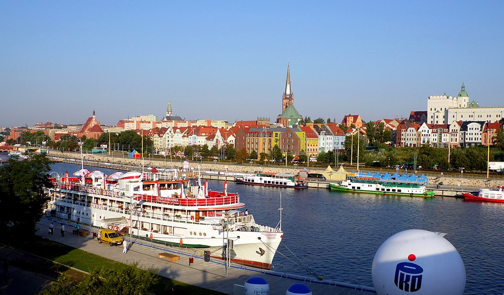
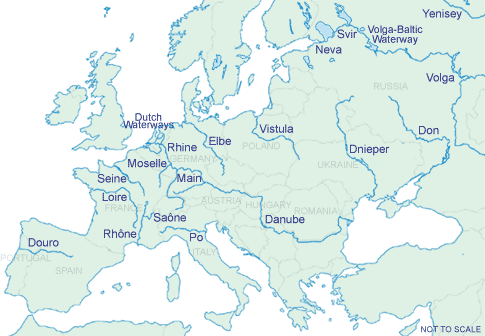
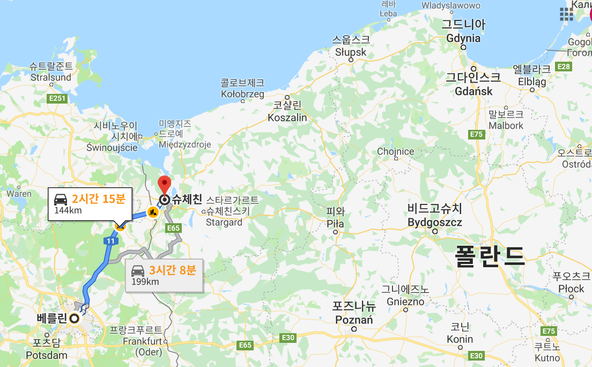
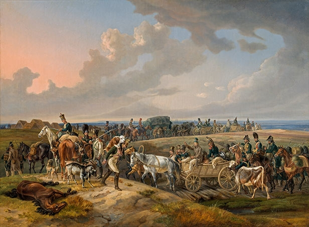

러시아 침공을 위한 병참 준비 - 무엇이 문제였을까 ? (1편)
게시: 2019-07-29T06:30:43+09:00
1810년 마지막 날에 영국 상품의 입항을 허용하고 반대로 프랑스 상품에 대한 고율의 관세를 부가하는 짜르 알렉산드르의 칙령(ukaz)이 내려지자, 이제 전쟁은 거의 피할 수 없는 것으로 유럽 전체가 인식하게 되었습니다. 이미 폴란드 문제로 1810년 중반부터 아웅다웅하고 있던 나폴레옹과 알렉산드르는 말로만 툭탁거리지 않았고, 서로 병력을 바르샤바 공국 접경 지역으로 증강 배치하면서 상호간의 긴장감을 키워나갔습니다. 나폴레옹은 1806년 전쟁 때 점령한 뒤 계속 움켜쥐고 있던 슈테틴(Stettin)과 단치히(Danzig) 등 프로이센의 주요 요새들에 병력을 추가 배치하고, 더 나아가 프랑스 내의 병력들도 스트라스부르(Strasbourg) 등 동부 지대로 조금씩 이동시켰습니다.

(오늘날 폴란드 영토가 된 슈테틴, 폴란드어로는 슈체친입니다. 오데르 강에 접하고 있는 도시로서, 베를린으로부터는 140km 정도 밖에 떨어지지 않은 도시이며 원래 프로이센 영토였습니다. 제2차 세계대전 이후 러시아에게 동부 영토를 빼앗긴 폴란드에게 보상 형식으로 주어졌지요.)
1811년에 접어들자 본격적인 전쟁 준비가 시작되었습니다. 특히 1811년 4월에는 긴 꼬리가 달린 혜성이 관측되면서 분위기를 고조시켰습니다. 전통적으로 유럽에서 혜성은 큰 전쟁과 기아, 전염병 등 좋지 않은 대사건의 전조로 받아들여졌는데, 모스크바부터 마르세이유까지 유럽 전역에서 이 불길한 혜성을 보면서 사람들은 불안에 휩싸였습니다. 알렉산드르 본인도 이 혜성에 대해 '어디까지나 과학에 대한 흥미 때문에' 깊은 관심을 가지고 미국 대사와 토론을 벌이기도 했습니다. 알렉산드르가 혜성에 관심을 기울이는 사이, 나폴레옹은 정말 바빴습니다. 그는 다가오는 러시아와의 전쟁이 기존의 전쟁과는 규모와 성격면에서 완전히 다를 것이라는 것을 잘 알고 있었고 그만큼 철저한 준비를 위해 많은 관심을 기울였습니다. 당시 나폴레옹이 남긴 편지를 보면, 나폴레옹은 연대 번호만 들어도 그 부대의 지휘관이 누구고 어디에 배치되어있으며 편성된 전력이 어떤 수준인지 또 그 과거 전적이 어땠는지 훤히 꿰고 있었다는 것을 볼 수 있다고 합니다. 그는 이런 세세한 점까지 신경을 쓰면서 새로 병력을 뽑고 새 부대를 편성하고 적재적소에 배치하는 일로 무척 바빴습니다. 나폴레옹이 러시아 침공을 위해 준비한 병력은 대략 68만, 그 중에서 실제로 네만(Nieman) 강을 건너 러시아로 동진할 인원은 (학자들에 따라 이견이 분분합니다만) 대략 40만에 달헸습니다. 나폴레옹은 그런 준비를 하면서 러시아군을 무찌를 신무기나 새로운 전술 등을 연구하지 않았습니다. 나폴레옹은 신기할 정도로 새로운 군사 기술에 대해서는 관심이 없었습니다. 대신 그가 이번 전쟁 준비에 있어서 가장 관심을 둔 것은 바로 병참이었습니다. 그는 1807년 삭막한 폴란드 땅에서 악전고투를 벌이면서 동부 유럽은 상대적으로 부유했던 독일이나 이탈리아와는 확연하게 다른 곳이라서 기존처럼 현지 조달에 의존해서 싸우다가는 굶어죽기 딱 좋다는 것을 뼈저리게 느꼈기 때문이었습니다. 그는 역대급의 보급망을 준비했습니다. 먼저, 나폴레옹은 1811년부터 1812년까지 폴란드를 가로지르는 비스툴라(Vistula, 폴란드어로는 Wisła 비스와) 강을 따라 대규모의 보급창을 건설했습니다. 비스툴라 강은 바르샤바는 물론 모들린(Modlin)과 토른(Thorn) 등의 주요 요새 및 도시를 거쳐 항구 도시 단치히(Danzig, 현재의 그단스크 Gdansk)에서 발트 해로 흘러가는 폴란드의 대표적 수로였기 때문입니다. 나폴레옹은 프랑스 영토와 직접 맞닿아 있는 라인 강과 이 비스툴라 강 사이에 총 5개의 수송로를 설정하고 프랑스와 독일 지역에서 긁어모은 물자를 실어날랐습니다.

(유럽 대륙의 주요 하천입니다. 템즈 강 같은 것은 명함도 못 내밀 정도지만, 비스툴라 강은 당당히 표시될 정도로 꽤 중요한 강입니다.)
(브레슬라우, 즉 보르츠와프의 아름다운 모습입니다. 오데르 강에 접한 도시입니다.)
그 결과, 1812년 1월까지 나폴레옹은 단치히에만 40만 명의 병사들과 5만 마리의 말이 50일 간 먹을 식량과 사료를 축적할 수 있었습니다. 그러니까 40만 명 x 50일 = 2000만 명분의 식량을 쌓아놓은 것이지요. 이 외에도 오데르(Oder) 강에 접한 프로이센의 도시 퀴스트린(Küstrin, 폴란드어로는 Kostrzyn 코스트신)과 슈테틴(Stettin, 폴란드어로는 Szczecin 슈체친)에도 별도로 수백만 명분의 식량을 축적했습니다. 역시 오데르 강에 접한 프로이센 도시 브레슬라우(Breslau, 폴란드어로는 Wrocław 브로츠와프)와 비스툴라 강에 면한 프오츠크(Płock) 및 비소그루트(Wyszogród) 등에는 거대한 곡물 창고와 제분소가 만들어졌습니다. 여기서 생산된 밀가루는 비스툴라 강을 통해 배 편으로 토른에 보내져 하루에 6만개씩의 큼직한 야전용 건빵이 구워졌습니다. 그 외에도 각 부대의 뒤를 따라 가도록 걸어다니는 푸줏간인 가축떼를 5만마리나 모아두었습니다.

(베를린과 슈테틴, 즉 슈체친과의 거리를 보여주는 지도입니다. 원래 슈테틴은 독일 영토일 때 베를린의 외항 노릇을 했다고 합니다. 아울러 비스툴라 강변을 따라 늘어선 폴란드의 주요 도시들과의 거리를 봐두시기 바랍니다.)

(나폴레옹의 주요 물자 수송로 역할을 한 비스툴라 강, 즉 비스와 강입니다. 폴란드의 주요 도시들은 이 강을 따라 늘어서 있습니다.)
이렇게 먹을 것과 마실 것을 잔뜩 쌓아만 놓는다고 문제가 해결되는 아니었습니다. 이것들을 쾌속으로 진군하는 부대들의 속도에 맞춰 러시아 내륙으로 수송을 해야 했지요. 나폴레옹은 이를 위해 치중대대(train battalion) 20개를 편성했습니다. 여기에는 7,848대의 마차가 배속되어 배고픈 병사들을 먹일 식량을 실어나르도록 했습니다. 이게 어느 정도의 규모인가하면, 스페인 전역을 위해 나폴레옹이 조직한 치중대대의 규모를 보시면 됩니다. 1810년 10월, 나폴레옹은 총 12개 치중대대를 편성했는데, 여기에 포함된 마차의 수가 1,700대 정도였습니다. 그 중에서 스페인 방면군에는 5개 대대를, 포르투갈 방면군에는 2개 대대를, 그리고 프랑스 국내에서 5개 대대가 배치되었습니다. 1810년 당시에는 스페인에 배치된 프랑스군의 수가 20만을 훌쩍 넘었는데, 거기에 고작 5개 대대 약 710대의 마차가 할당된 것입니다. 그런데 40만의 러시아 방면군을 위해 10배가 넘는 수의 마차를 준비한 것을 보면, 확실히 나폴레옹은 여태까지와는 다른 각오를 가지고 수송에도 매우 신경을 쓴 것입니다.

(한번도 하일라이트를 받지 못한 부대가 바로 치중대이지요. 하지만 전투를 승리로 이끄는 것은 보병과 포병, 기병일지 몰라도, 전쟁을 이기는 것은 바로 이 치중대였습니다.)
나폴레옹이 평소에 등한시하던 식량 문제에도 이렇게 신경을 썼으니 탄약 문제는 말할 것도 없이 더욱 철저한 준비가 이루어졌습니다. 현지 조달을 중시하던 나폴레옹조차도 무기와 탄약은 항상 본국으로부터의 수송에 의존했었거든요. 바르샤바에는 큼직한 무기고가 건설되어 각종 탄약과 무기가 집적되었습니다. 위에서 언급된 주요 식량 집적소인 단치히, 슈테틴, 퀴스트린 등에는 식량 뿐만 아니라 각종 야포들이 모여들었습니다. 제3차 대불동맹전쟁 때 동원된 나폴레옹의 7개 군단이 보유했던 대포의 수는 총 300문을 넘지 않았고, 아우스테를리츠 전투 당일날은 훨씬 더 적은 수의 대포가 동원되었습니다. 러시아 원정 이전까지는 유럽 최대의 전투였다는 바그람 전투에 동원된 프랑스군의 전체 대포 수는 488문이었습니다. 그런데 프로이센의 마그데부르크(Madeburg)에 집결시킨 탄약과 포병대의 규모만 해도 입이 떡 벌어질 정도였습니다. 이 곳의 무기고에는 135톤의 화약과 함꼐 200만발의 머스켓 탄약포가 축적되었을 뿐만 아니라, 야포 462문과 공성용 중포 100문이 집결되어 있었습니다. 슈테틴에는 263문의 야포, 100만발의 머스켓 탄약포, 90톤의 화약을, 퀴스트린에는 108문의 야포와 100만발의 탄약포를, 그리고 글로가우(Glogau)에도 108문의 야포와 100만발의 탄약포, 45톤의 화약을 축적해놓았습니다. 1812년 5월, 러시아를 향해 출발하던 그랑다르메(Grande Armee)는 806문의 야포와 761,801발의 포탄을 가지고 있었는데, 이는 야포 1문당 거의 1,000발에 가까운 포탄을 준비한 것이었습니다. 사상 최대이기도 하고 또 유례없이 격렬한 포병전이었던 바그람 전투 40시간 동안 프랑스군 포병대의 488문은 약 10만발을 발사했는데, 이는 1문당 200발 정도를 쏘아댄 것이었습니다. 이런 격렬하고 대규모였던 전투는 나폴레옹 인생 전체에서도 흔치 않았던 것을 고려하면, 정말 충분한 양의 탄약을 준비했다고 할 수 있었습니다. 이렇게 막대한 준비를 했지만, 아시다시피 나폴레옹의 러시아 원정은 결국 병참 문제로 비참한 결말을 맞이했습니다. 대체 무엇이 문제였을까요 ?
Source : 1812 Napoleon's Fatal March on Moscow by Adam Zamoyski http://www.indiana.edu/~psource/PDF/Archive%20Articles/Spring2011/LynchBennettArticle.pdf https://pdfs.semanticscholar.org/1d6e/96fd09126a40dca06ef01e8c9b13785e8379.pdf https://warandsecurity.com/2013/02/11/why-napoleons-1812-russian-campaign-failed/ https://en.wikipedia.org/wiki/French_invasion_of_Russia https://www.stolenhistory.org/threads/1812-french-invasion-of-russia-vs-logistics.1167/ https://www.bbc.co.uk/news/magazine-16929522 Napoleon's Train Troops: 1800-1815. Paul Lindsay Dawson